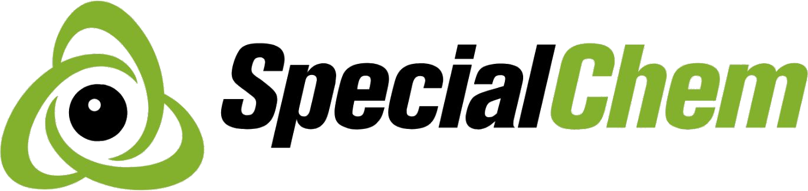
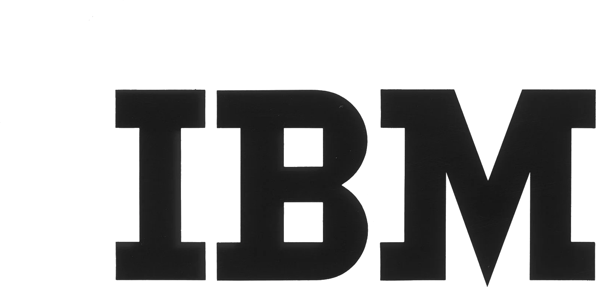

A buyer lands on your product page with an application and a list of numbers it has to meet. They find a library of datasheets and a contact form, and most of them leave. Matterialis turns the datasheets you already publish into structured data, and puts an assistant on your website that checks every requirement against them, line by line, and hands the qualified lead to your team.
We read the technical and safety datasheets you already publish and turn them into a structured database you own. On top of it sits an assistant that answers buyers on your website, qualifies them, and shows you what the market asked for. It sells what you sell and nothing else.
| Rank | Grade | Evidence | Criteria met | Viscosity | Tg | Die shear | Halogen-free |
|---|---|---|---|---|---|---|---|
| 1 | NF-6210 high-Tg die attachTDS rev. 4 · 2026-03 | Strong | 4 of 4 | 24 000 | 135 | 11.2 | Claimed |
| 2 | NF-6202 B-stageable die attachTDS rev. 7 · 2025-11 | Strong | 3 of 4 | 28 000 | 40 | 10.4 | Claimed |
| 3 | NF-4180 silver epoxyTDS rev. 2 · 2024-08 | Limited | 2 of 4 | 18 500 | 110AI | — | — |
| 4 | NF-7110 low-stress underfillTDS rev. 5 · 2026-01 | Strong | 2 of 4 | 9 800 | 85 | — | Claimed |
| 5 | NF-5500 potting compoundTDS rev. 3 · 2025-06 | Limited | 1 of 4 | 6 200 | 62AI | — | Not claimed |
| 6 | NF-9020 thermal gap fillerTDS rev. 1 · 2025-09 | Weak | 0 of 4 | 41 000 | — | — | — |
Every PDF you publish goes through the pipeline: each property with its unit, test method and conditions, each classification, each claim. A datasheet takes seconds. A range of a thousand grades is structured the same day and reviewed by our materials scientists. What comes out is a database you can search by requirement and connect to anything, including your own AI.
Buyers describe the application in their own words, or attach the datasheet of the product they use today. The assistant turns that into criteria, searches your range, and shows each requirement as met, missed, unclear or not stated, with the value from your sheet beside it. When the fit is there, it hands your team a qualified lead with the requirements already written down. When the sheet does not say, it says so and offers a person.
| Requirement | Asked | Met | Missed | Not stated | Buyers wanted |
|---|---|---|---|---|---|
| Glass transition temperature°C | 48 | 19 | 29 | 0 | ≥ 100–150 °C |
| ViscositymPa·s | 41 | 36 | 5 | 0 | ≤ 15 000–30 000 mPa·s |
| Moisture absorptionwt% | 22 | 4 | 6 | 12 | ≤ 0.3–0.5 wt% |
| Thermal conductivityW/m·K | 17 | 11 | 6 | 0 | ≥ 2–5 W/m·K |
Every conversation is yours to read, and the dashboard counts them: requests per day, which properties buyers ask for and at what thresholds, how often your best product met them, and where it missed. Unmet demand is listed apart. A column of misses is a product to develop. A column of not stated is a datasheet to finish, which is cheaper.
We structure your datasheets. Your web team adds one script tag to the product pages. The assistant appears in the corner, in your brand colour, isolated from the rest of your page so nothing else changes. It runs only on the domains you allow, so nobody can lift it onto another site.
Most suppliers reach buyers through a marketplace, on its terms, or through a PDF library and a contact form. Matterialis puts a sales engineer on your own website, over your catalogue alone.

A marketplace listingSwipe the table to compare
From public product information, October 2026. We compare what each route is built to do. A marketplace listing and Matterialis on your site are not exclusive; many suppliers will want both. Tell us if we have anything wrong.
Every answer comes from your datasheets. Each requirement is reported as met, missed, unclear or not stated, with the value from your sheet beside it. No value is invented, and no other supplier's product is ever shown.
The team comes from IBM Research and the University of Cambridge, and the method is written up and patent pending. The people reviewing your structured catalogue read datasheets for a living.

IBM Research University of CambridgeYour private catalogue lives in its own isolated store, owned and fully controlled by you. You can read, export and delete every conversation. Nothing you share is used to train shared models or shown on anyone else's site.
No. Every product the assistant shows, links or counts comes from your catalogue, by construction: the search it runs can only return your grades. If a buyer names a competitor's product or attaches its datasheet, the assistant looks for the products in your range that meet the same requirements and presents those on their own merits.
Your datasheets. For most suppliers that means the technical and safety data sheets already on your website, which we read directly. If you have better data than you publish, such as measured values, approvals or application notes, you can share it and it will be used; nothing you share is used to train shared models. Then one script tag on your product pages, which your web team adds in minutes.
The assistant says so. The requirement is shown as not stated, the buyer is told it is a gap in the document, and they are offered a person to ask. You see the question in your dashboard under documentation gaps, which is often the cheapest product improvement available: a value measured once and added to the sheet answers every future buyer who asks.
The parts that matter are not generated. Which products are shown, each requirement's verdict and the value beside it are computed from your datasheets, never written by the model. The model turns the buyer's words into criteria and explains the result in prose, and it is held to the values the search returned. It never quotes a price, lead time or approval that is not in your documents. Estimated values from similar products are always marked as estimates.
Every conversation, in full, and the counts across them: which properties buyers ask for and at what thresholds, how often your best product met them, where it missed, which products lead and which get clicked, and the requests that found nothing at all. Product gaps and documentation gaps are listed separately, because one needs development and the other needs a datasheet update.
Yes. The catalogue is scoped to the products you sell, whoever makes them, and the assistant presents them as your range. If a line has to be kept out of the public assistant, it is left out of the scope.
Yes. Your sales and technical teams get the same search over your range, and can add internal test data, approvals and application notes to it. That workspace stays apart from the public assistant, so an inbound request gets a referenced answer in minutes and nothing internal reaches a buyer. An assistant that drafts those answers for your reps is the next piece of this product; ask us about timing.
Send us a link to your technical library and we will structure a sample of your range before we talk. Two ways suppliers start:
The assistant running over a sample of your own datasheets, answering the questions your buyers actually ask. Thirty minutes.
Live on your website in a week, on one section of your range, with the dashboard, so the value is measured before it is extended.
Looking for materials rather than selling them? The Matterialis platform searches 200,000 grades across every supplier.
Matterialis for formulators